xxxxxxxxxx411、检查端口被哪个进程占用2netstat -lnp 查看所有列表3netstat -lnp|grep 88 #88请换为你的apache需要的端口，如：804SSH执行以上命令，可以查看到88端口正在被哪个进程使用。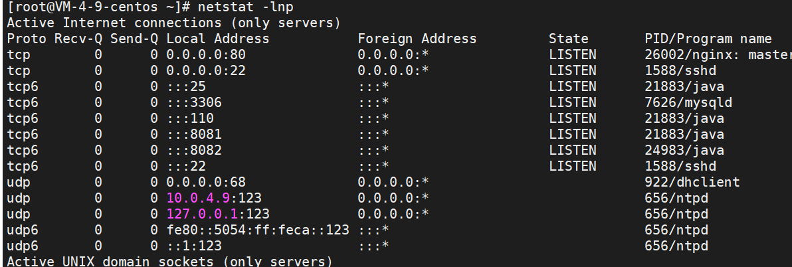
xxxxxxxxxx412、查看进程的详细信息2
3ps 17774SSH执行以上命令。查看相应进程号的程序详细路径。如下图。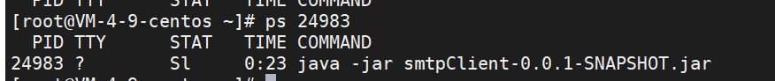
xxxxxxxxxx213、杀掉进程2kill -9 24983 #杀掉pid为24983的进程
首先用yum命令看一下是否有自带的java环境
xxxxxxxxxx11yum list installed |grep java如果有的话，就需要删掉
查看yum库中的java安装包
xxxxxxxxxx11yum -y list java*
安装JDK
xxxxxxxxxx11yum -y install java-1.8.0-openjdk*
查找java安装路径
xxxxxxxxxx11which java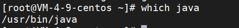
查看安装的依赖文件
执行
xxxxxxxxxx11ls -lrt /usr/bin/java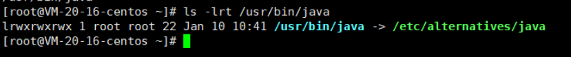
执行
xxxxxxxxxx11ls -lrt /etc/alternatives/java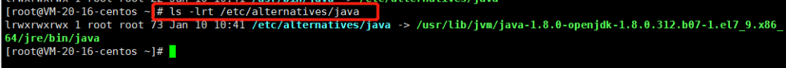
可以看到jvm目录，进入该目录
xxxxxxxxxx11cd /usr/lib/jvm
查看该目录下的文件
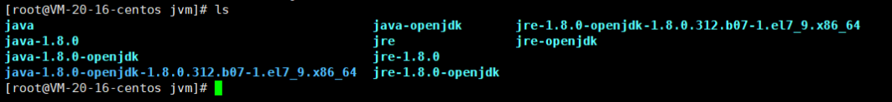
xxxxxxxxxx11vi /etc/profile最底部添加
xxxxxxxxxx41export JAVA_HOME=/usr/lib/jvm/java-1.8.02export JRE_HOME=$JAVA_HOME/jre 3export PATH=$PATH:$JAVA_HOME/bin:$JRE_HOME/bin4export CLASSPATH=.:$JAVA_HOME/lib/dt.jar:$JAVA_HOME/lib/tools.jar:$JRE_HOME/lib重新加载配置
xxxxxxxxxx11source /etc/profile
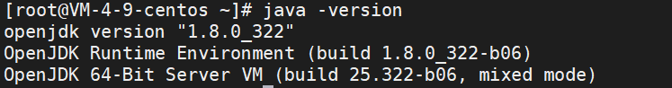
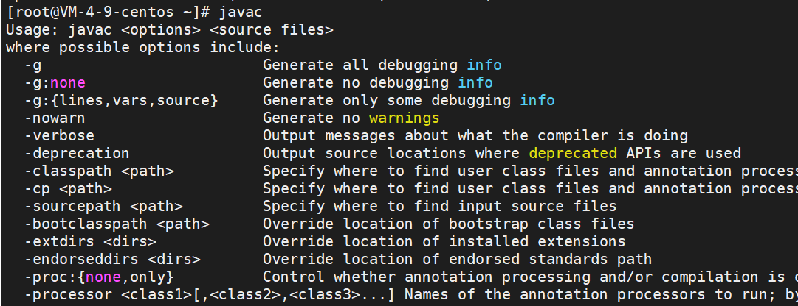
查询
xxxxxxxxxx11rpm -qa | grep java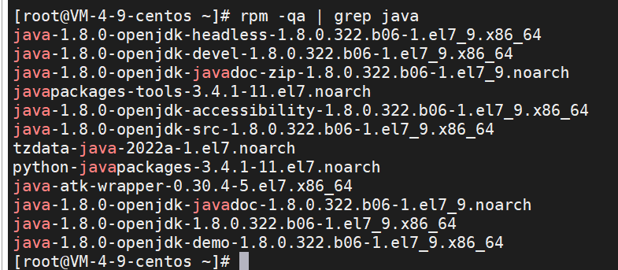
使用yum卸载
xxxxxxxxxx11yum -y remove java java-1.8.0-openjdk-1.8.0.322.b06-1.el7_9.x86_64或者使用rpm删除
xxxxxxxxxx11rpm -e --nodeps java-1.8.0-openjdk-1.8.0.322.b06-1.el7_9.x86_64
find查看是否还有相关残余文件
xxxxxxxxxx51find / -name java2find / -name jdk3find / -name jre4find / -name gcj5//如果有,利用rm删除
打包springboot项目为jar包
再服务器建立一个javaWorkspace
然后再每个工程建立一个单独的文件夹
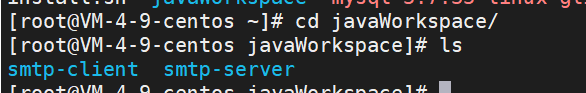
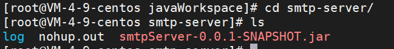
将打包好的jar包放进对应的文件夹里面
进行该文件夹，运行程序（记得给运行端口开放防火墙）
xxxxxxxxxx11nohup java -jar smtpClient-0.0.1-SNAPSHOT.jar &以nohup模式运行，就会将控制台打印的信息全部存入nohop.out中，不会打印在控制台了。
如果想要关闭程序，可以利用上面的杀死进程方法关闭程序；
查看端口情况
xxxxxxxxxx11netstat -tan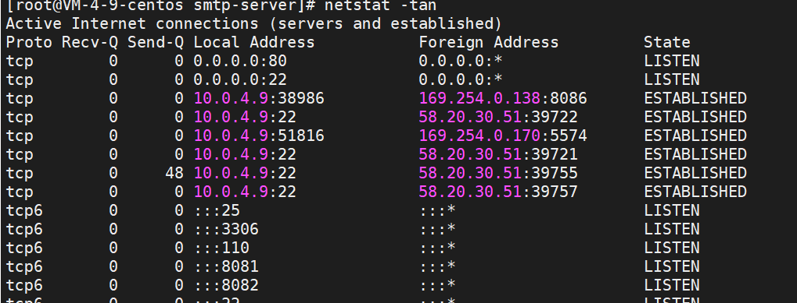
查看pid
xxxxxxxxxx11netstat -tanp #带PID名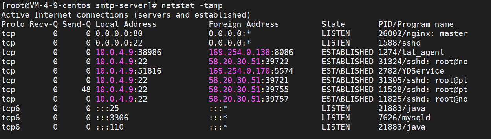
他之前25端口是由一个master程序占用
查一下这个程序位置
xxxxxxxxxx21find / -name master #查了一下位置2/usr/libexec/postfix/master停止服务
xxxxxxxxxx21systemctl stop postfix #停止服务2systemctl disable postfix #禁止开机启动之后就可以自己使用了